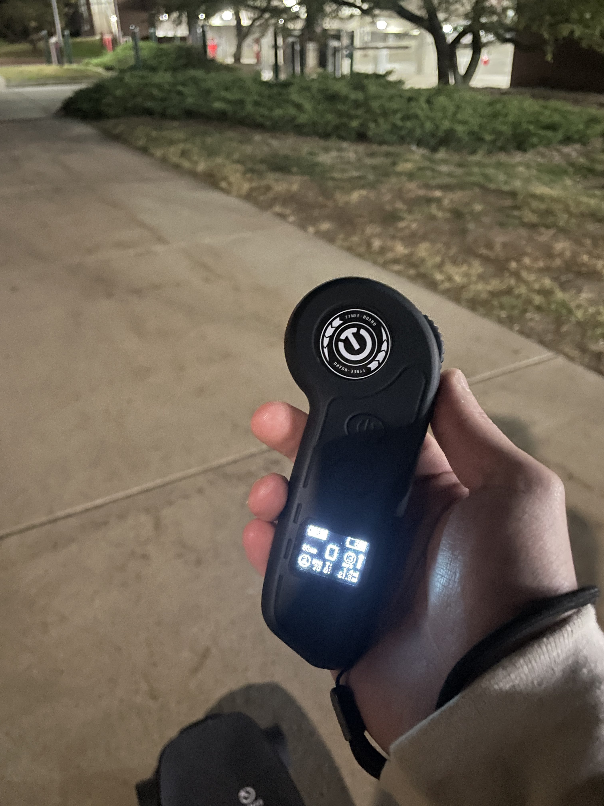

Blog Post 1
| Date | Distance | Time |
|---|---|---|
| Oct. 8 | 8.4 Miles | 20:34 |
| Oct. 14 | 11.2 Miles | 44:26 |
| Oct. 20 | 5.5 Miles | 13:53 |
Electric skateboarding is an extremely fun and relatively inexpensive hobby. To get started, all you need is an electric skateboard, a helmet, and decently grippy shoes. A solid sense of balance also helps a lot too. The hobby itself is risky, but the thrill and freedom of a self-propelled skateboard is highly addictive.
I watched famous YouTuber Casey Neistat ride Boosted Boards for years but couldn't afford to spend an upwards of $2000 to buy one. Over the years, electric skateboards became more affordable, and I finally bought my own. I purchased a Tynee Mini 2 for less than $700 - a fraction of the cost for a Boosted Board. I have been riding it around MSU campus for weeks and am super happy with it. It has a maximum range of 25 miles, and a top speed of nearly 30 miles per hour. Riding at those speeds is too scary for me. When going fast, people tend to develop "speed wobbles" due to instability of the skateboard "trucks." I'll try to reach those speeds one day, but for now I'm content cruising to classes or to pickup groceries. Since it's getting cold and approaching winter in Michigan, I'll have to find another hobby to keep me busy until springtime.
